This page is automatically compiled, and documents all the configuration directives that are available in PHP Weathermap v0.97a .
NODE TEMPLATE POSITION LABEL TARGET USESCALE MAXVALUE ICON USEICONSCALE LABELOFFSET LABELANGLE LABELFONT *COLOR INFOURL OVERLIBGRAPH OVERLIBWIDTH OVERLIBHEIGHT OVERLIBCAPTION NOTES SET ZORDER
LINK TEMPLATE NODES TARGET USESCALE WIDTH BANDWIDTH DUPLEX BWLABEL INBWFORMAT OUTBWFORMAT BWSTYLE BWLABELPOS BWFONT INCOMMENT OUTCOMMENT COMMENTFONT COMMENTPOS COMMENTSTYLE SPLITPOS *COLOR INFOURL ININFOURL OUTINFOURL OVERLIBGRAPH INOVERLIBGRAPH OUTOVERLIBGRAPH OVERLIBWIDTH OVERLIBHEIGHT OVERLIBCAPTION INOVERLIBCAPTION OUTOVERLIBCAPTION NOTES INNOTES OUTNOTES VIA VIASTYLE LINKSTYLE ARROWSTYLE SET ZORDER
BACKGROUND WIDTH HEIGHT HTMLOUTPUTFILE HTMLSTYLESHEET IMAGEOUTPUTFILE IMAGEURI FONTDEFINE *FONT *COLOR TIMEPOS MINTIMEPOS MAXTIMEPOS TITLE TITLEPOS KILO HTMLSTYLE SCALE KEYPOS KEYSTYLE SET INCLUDE
The initial definition of a NODE. This must come before any other configuration related to this node.
The 'nodename' is used in link definitions to specify which nodes the link joins. The nodename is must be a single word, with no spaces.
There is one special node name, 'DEFAULT', which allows for the setting of defaults. All nodes that are defined after this one in the configuration file will use the parameters of this node as a starting point. For this reason, it is best to define the DEFAULT node at the top of the configuration file, if you intend to use it.
By default, each new node starts with the same set of properties. You can change the default properties by defining a node called DEFAULT.
You can also use the TEMPLATE keyword to make a node inherit it's settings from any other node. The node you use must be defined earlier in the config file than where you use it.
You can make template-only nodes that are not visible in the map, by not including a NODES line in the node. Template nodes can also use templates, to build up a hierarchy of 'types'.
NOTE: The TEMPLATE line should be the first line in the NODE definition, as it will copy the configuration over the top of anything else you have already defined for that NODE.
NODE server
Specifies where to place the node on the map. Coordinates are in pixel units, with the origin at the top-left of the map.
Optionally, you can also specify another node that the coordinates are relative to. This allows you to have 'sub-nodes' that follow a master node around as you alter the map. Relative nodes can be relative to other relative nodes, as long as the node at the end of the chain is not relatively positioned!
NODE main_node
POSITION 200 320
LABEL MAIN
NODE sub_node
POSITION main_node 0 -20
LABEL {nodes:main_node:invalue}
Specifies a label for the node. Everything to the end of the line is used.
If the node has an ICON defined as well, then you can specify the position of the label relative to the node's centre-point by using LABELOFFSET.
The text for the label can contain special tokens to show map data.
This is drawn using the font specified by LABELFONT in the colours specified by LABELFONTCOLOR, LABELFONTSHADOWCOLOR, LABELBGCOLOR and LABELOUTLINECOLOR.
Specifies where to look for the current "throughput" information for this NODE. You can also specify multiple targets, which will then be added together to make the aggregate result which is then displayed. Specify the targets on one TARGET line, seperated with a space. If a targetspec starts with a '-', then it's value will be subtracted from the final result instead.
Also, if a targetspec starts with a number, then a *, then it's used a scaling factor on the result. You can do basic maths with this, especially if you remember that multiplying by a number below 1 is the same as dividing by 1 divided by that number (0.5* is the same as divide by 2).
For both the '-' and '*' options, there must be no spaces between any modifiers and the actual target string after it.
It's important to note, especially for NODEs, that the value that is used does not have to be bandwidth. You can use data for temperature, session-counts, CPU usage or anything else you can get data for.
The actual contents of the targetspec depend on the data source plugins that are available. The standard plugins are documented here.
To help with filenames that can contain spaces, or for the external script data source, you can enclose the entire targetspec in double-quotes (") to show that it is a single targetspec. The quotes must be around the whole targetspec, including any prefixes.
TARGET link1a.rrd link1b.rrd
TARGET poot.rrd:-:DS1 poot2.rrd:DS0:-
Specify which SCALE to use to decide the colour of this node.
After the percentage usage is calculated (using BANDWIDTH/MAXVALUE and data from the TARGET line), the colour is decided by looking up the percentage against this SCALE. If there is no USESCALE line, then the default scale is used.
If you also specify 'absolute', then no percentage calculation is performed. The raw values from the TARGET line are just looked up in the named SCALE.
For nodes, you can also specify a scalename of 'none'. This stops the node's colour from changing at all. This is useful if you want to use the TARGET line to fetch data that is used in the LABEL or ICON of the node, for example, without changing the colour of the node itself.
You can also change the colour of the ICON associated with a NODE according to a different SCALE, by using USEICONSCALE.
Specifies the maximum value(s) for the node, in the same way that BANDWIDTH does for a LINK. These are used to calculate the percentage usage value, which in turn is used to decide the NODE's colour, if it has a TARGET defined.
The default value is 100, which has the effect of not changing the input value ( (n/100)*100 = n ).
Specifies an icon to use for the node.
The filename can either be a full path to the image, or a relative one.
The icon file must be in PNG, JPEG or GIF format. Alpha-transparency within the icon should be honoured by Weathermap for PNG icons, to create irregular shapes.
If you specify the word 'none' as the icon filename, then no icon is used. This is useful if you have specified an ICON in the DEFAULT NODE, and want to override that for a few special cases.
There are some special icon filenames that can be used to generate an icon image without using an external file. These all require you to specify a maxwidth and maxheight which are then used as the size of the icon. The 'magic filenames' are:
The second form allows you to specify a maximum width and height for the icon. If the PNG file that you specify is bigger or smaller than this size, then it is automatically scaled up (or down) in proportion, so that it fits into a box of the size you specify.
The size of the icon image is used by LABELOFFSET to decided how far to move the label, if you use compass-point offsets.
The text for the filename can contain special tokens to select an icon based on map data.
You can adjust the colour of the icon according to a SCALE, by using USEICONSCALE, if you are using the PHP GD library (the function required is not present in the main GD library).
Specify which SCALE to use to decide the colour of the icon for this node.
After the percentage usage is calculated (using BANDWIDTH/MAXVALUE and data from the TARGET line), the colour is decided by looking up the percentage against this SCALE. If there is no USEICONSCALE line, then no scale is used, and the icon colour does not change.
Hint: This facility works best when you start with greyscale images.
NOTE: Prior to 0.97, Icon colourising used the PHP imagefilter() function. This function is only available in the version of GD that is bundled with PHP, and not with the official GD library. Several popular operating systems (e.g. Debian/Ubuntu) use the official GD library rather than the bundled PHP library. If you know that you do have the imagefilter function, and you prefer the 'old-style' coloring, then you can add SET use_imagefilter 1 in the top section of your map config file, to use imagefilter instead.
If you specify an ICON, and also a LABEL, then you will find that the label is often hard to read. LABELOFFSET allows you to move the position of the LABEL, so that it's not directly over the centre of the node anymore.
You can specify a compass-point (e.g. LABELOFFSET S). The compass-point method takes the size of the ICON, and uses that as the offset distance in the direction you specify. This way, you can change your icon for something of a different size, and not need to change all your offsets. You can use the main 8 points of the compass: N, E, S, W, NE, SE, NW, SW.
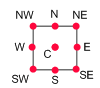
The compass points, relative to the node's bounding-box..
For more control, you can specify an integer offset for the x and y positions of the label (e.g. LABELOFFSET -10 -20) instead.
Specifies a rotation angle of the label for a node. Allowed angles are 0, 90, 180 and 270 degrees. The rotation is around the centre of the label, after any LABELOFFSET has been applied.
The LABELFONT must be a TrueType font for angles other than 0 (the default) as these are the only font type to support rotating text.
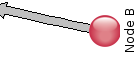
Rotated label, using LABELANGLE 90 and LABELOFFSET E
Specify the font used for drawing the LABEL.
Fonts are specified by number. The GD library that Weathermap uses has 5 built-in fonts, 1-5. You can define new fonts based on TrueType or GD fonts by using the FONTDEFINE directive.
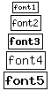The built-in GD fonts.
Specify the colours used for drawing the LABEL.
red, green and blue are numbers from 0 to 255.
LABELFONTSHADOWCOLOR, LABELBGCOLOR and LABELOUTLINECOLOR have an additional option - 'none' - which stops that element of the LABEL being drawn. LABELFONTSHADOWCOLOR defaults to 'none'.
LABELFONTCOLOR has an additional option 'contrast', which will select either black or white depending on the current LABELBGCOLOR. This is especially useful if you are using a SCALE to change the colour of your NODE LABELs.
AICONOUTLINECOLOR and AICONFILLCOLOR are used to colour an 'artificial ICON' if one is defined for this node. To allow the artifical icon to also follow the colour of the LABELBGCOLOR when you are using a SCALE, you can also specify 'copy' as the colour for AICONFILLCOLOR. See ICON for more about artificial icons.
Creates a hyperlink in the HTML output.
If you are using the HTML output facility, then a link is added to the <map> section of the HTML so that when you click on the node, you are taken to the url specified here.
Creates a popup image in the HTML output.
If you are using the HTML output facility, and HTMLSTYLE is set to 'overlib', then a link is added to the <map> section of the HTML so that when you move the mouse pointer over the the node, a box will pop up containing the image that you specify. Typically used to link to historical data in your network monitoring system.
You can also specify more than one url, in which case the images are 'stacked' one after another in the popup box.
If a NOTES line is also specified for a node, then the image(s) specified here appears with the NOTES text underneath it.
You can influence how Weathermap positions the popup box, using the OVERLIBWIDTH and OVERLIBHEIGHT keywords.
OVERLIBGRAPH http://www.yoursite.net/mrtg/router1-cpu-daily.png
Specify the width, in pixels of the graph image referred to by OVERLIBGRAPH line.
This is an optional extra that allows the OverLib library to make a better job of positioning the 'popup' image so that it doesn't appear off the edge of the screen. Typically, you would use this once, in the DEFAULT NODE. If you use this, you must also use OVERLIBHEIGHT, for either to have any effect.
Specify the width, in pixels of the graph image referred to by OVERLIBGRAPH line.
This is an optional extra that allows the OverLib library to make a better job of positioning the 'popup' image so that it doesn't appear off the edge of the screen. Typically, you would use this once, in the DEFAULT NODE. If you use this, you must also use OVERLIBWIDTH, for either to have any effect.
Specify the caption used for the popup HTML 'window' if you have also specified an OVERLIBGRAPH line. By default, this is the name of the NODE.
The text for the caption can contain special tokens to show map data.
Specifies the text or HTML notes for a node.
The notes text appears in a popup box when the user hovers their mouse over the node. If an OVERLIBGRAPH is specified too, then the text appears below the graph.
The map HTMLSTYLE must be set to 'overlib' to enable any of the mouse-hover functionality.
Specifies a value for a hint variable.
Hint Variables allow the user to pass settings to the internals of Weathermap that wouldn't normally need to be changed, or that aren't part of the core Weathermap application. Examples are: small rendering changes, parameters for datasources plugins and similar.
Hint Variables are either Global for the map, or assigned to a specific link or node.
There is more about Hint Variables in the Advanced Topics section.
Specifies the order in which to draw this item on the map.
By default, all nodes are drawn above all links. There are some situations where you might like to change this, for example if you use a NODE as a background image, and you want links to show in front of that image.
By default, all nodes have a Z coordinate of 600, and all links have 300. The map legend is at 1000, which cannot be changed (you can move everything else above it, if you like, of course). Items are drawn from lowest Z up to highest Z, so if you want a particular node to appear underneath the default links, you can use 'ZORDER 250' to do that.
The first line of a LINK definition.
The linkname must be unique within the map, and must not contain spaces. The only place it currently appears is in the small title-bar of a popup graph if you specify an OVERLIBGRAPH without an OVERLIBCAPTION, however.
There is one special link name, 'DEFAULT', which allows for the setting of defaults. All links that are defined after this one in the configuration file will use the parameters of this link as a starting point. For this reason, it is best to define the DEFAULT link at the top of the configuration file, if you intend to use it.
By default, each new link starts with the same set of properties. You can change the default properties by defining a link called DEFAULT.
You can also use the TEMPLATE keyword to make a link inherit it's settings from any other link. The link you use must be defined earlier in the config file than where you use it.
You can make template-only links that are not visible in the map, by not including a NODES line in the link. Template links can also use templates, to build up a hierarchy of 'types'.
NOTE: The TEMPLATE line should be the first line in the LINK definition, as it will copy the configuration over the top of anything else you have already defined for that LINK.
LINK bigpipe WIDTH 8 ARROWSTYLE classic LINK smallpipe WIDTH 3 ARROWSTYLE compact # this link uses the bigpipe template, so it doesn't need any formatting/styling commands LINK a_real_link TEMPLATE bigpipe NODES rtr1 rtr2
These are the NODEs that this link joins. There can be only two. They are the 'nodename's from the NODE line for each node.
Optionally, you can add an offset after a nodename, to move the location of that end of the link. This can help with crowded areas of the map, and also in making parallel links. Valid offsets can be numeric values, to indicate the relative position in pixels from the centre of the node, or are named after compass-points: N,S,E,W,NE,NE,SE,SW. The compass points describe locations around the edge of the box that contains the node. You can also specify a percentage after the compass point, to be a certain proportion of the way from the centre. The percentage must be two digits. Finally, you can also use polar coordinates to specify offsets, with an angle in degrees and a radius in pixels from the centre point. 0 degrees is straight up.
The order of the nodes is significant. When reading data sources, the flow from the first node to the second is considered 'out' and from second-to-first is 'in'.
The compass points, relative to the node's bounding-box..
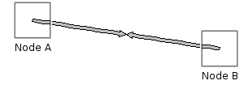
The default - node centre to node centre.
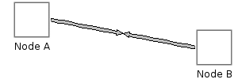
Using compass points - NODES node1:E node2:W
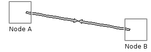
Using compass points with percentages - NODES node1:E50 node2:W50
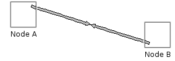
Using polar offsets - NODES node1:45r20 node2:225r20
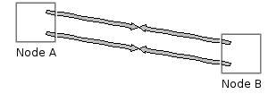
Using offsets to make parallel links- NODES node1:NE50 node2:NW50 for one link and NODES node1:SE50 node2:SW50 for the other.
LINK mylink NODES node1 node2
LINK firstlink NODES node1:E node2:E LINK secondlink NODES node1:W node2:W
LINK firstlink NODES node1:E50 node2:E50 LINK secondlink NODES node1:W50 node2:W50
LINK firstlink
NODES node1:-10:10 node2:20:12
LINK firstlink
NODES node1:45r20 node2:225r20
Specifies where to look for the current throughput information for this LINK. You can also specify multiple targets, which will then be added together to make the aggregate bandwidth which is then displayed. Specify the targets on one TARGET line, seperated with a space. If a targetspec starts with a '-', then it's value will be subtracted from the final result instead.
Also, if a targetspec starts with a number, then a *, then it's used a scaling factor on the result. You can do basic maths with this, especially if you remember that multiplying by a number below 1 is the same as dividing by 1 divided by that number (0.5* is the same as divide by 2).
For both the '-' and '*' options, there must be no spaces between any modifiers and the actual target string after it.
The actual contents of the targetspec depend on the data source plugins that are available. The standard plugins are documented here.
To help with filenames that can contain spaces, or for the external script data source, you can enclose the entire targetspec in double-quotes (") to show that it is a single targetspec. The quotes must be around the whole targetspec, including any prefixes.
TARGET link1a.rrd link1b.rrd
TARGET poot.rrd:-:DS1 poot2.rrd:DS0:-
Specify which SCALE to use to decide the colour of this link.
After the percentage usage is calculated (using BANDWIDTH and data from the TARGET line), the colour is decided by looking up the percentage against this SCALE. If there is no USESCALE line, then the default scale is used.
If you also specify 'absolute', then no percentage calculation is performed. The raw values from the TARGET line are just looked up in the named SCALE.
Specifies the width of this link when drawn. The width value can be any positive number (including non-integers).
The actual width of the final link arrow will be roughly 2*width+1 pixels, due to the way links are drawn, and rounding errors as the internal floating-point values are finally forced onto an integer pixel-grid.
What it actually does is calculate a centre-line (or spine), divide that up into so many segments, and then at each point along the spine, find the normal (90 degrees to the direction of the line). Then step WIDTH pixels along the normal in each direction to get a point to draw. This apparently-complex scheme is required to allow for VIAs - both angled and curved links have special handling, and regular straight links are treated as curved links with no VIA by default.
Specifies the maximum throughput of this link, in bits per second.
This is used to calculate the percentage utilisation, which in turn is used to make the colour for the link arrow, and optionally the label on the link.
The second form allows you to have 'asymmetric' links, like an ADSL, where the first number is the maximum bandwidth from node1 to node2 and the second is the maximum from node2 to node1, as they are given in the NODES line.
Bandwidths can also use K,M,G and T suffixes to specify large values. Also see the KILO global option though.
BANDWIDTH 2M 256K
'half' indicates that the bandwidth specified by the BANDWIDTH keyword is half-duplex rather than the default full.
This means that the percentages calculated are calculated as (in+out)/max instead of (in/max) and (out/max) separately.
Specifies the type of 'bandwidth' label shown on each link.
The default is 'percent', but you can also have 'none', 'unformatted' or 'bits'. 'bits' shows the actual bandwidth, formatted using K,M,T,G suffixes where appropriate. 'unformatted' takes the value from the TARGET and displays it without any formatting - this can be useful for mapping things other than bandwidth. 'none' hides the bandwidth label altogether.
Specifies a custom string to use for the inbound data BWLABEL bandwidth labels.
This command is intended as an advanced alternative to the BWLABEL command, for situations where you want more control over the content of the labels.
Instead of using bits, percent, etc, you can use any string in the label. Most importantly, the text for the label can contain special tokens to show map data. In most normal situations you need to use the tokens, or the label won't do much useful
There is also a matching OUTBWFORMAT command to do the ame job for the outbound bandwidth label.
INBWFORMAT {link:this:inpercent}% of {link:this:max_bandwidth_in:%k}b/sec
Specifies a custom string to use for the outbound data BWLABEL bandwidth labels.
See the INBWFORMAT entry for more information.
Specifies the style used to draw the box around the 'bandwidth' label shown on each link.
Two styles are currently available: 'classic' leaves the box horizontal, regardless of the direction of the link. 'angled' rotates the box to follow the directiong of the link arrow.
The BWFONT must be a TrueType font as these are the only font type to support rotating text.
To change the contents of the label, use BWLABEL or INBWFORMAT/OUTBWFORMAT.
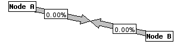 Classic label style
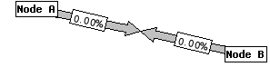 Angled label style
Specifies the position of the 'bandwidth' labels shown on each link.
The two position values are percentages along the link arrow, from the first to the second node. Therefore BWLABELPOS 75 25 is the default.
Weathermap will produce a warning if the outpostion is greater than the inposition. In most cases, you have probably made a mistake, but if you have a good reason to do this, then you can disable that warning using 'SET nowarn_bwlabelpos 1' in the top section of you map config file.
Specify the font used for drawing the BWLABEL boxes.
Fonts are specified by number. The GD library that Weathermap uses has 5 built-in fonts, 1-5. You can define new fonts based on TrueType or GD fonts by using the FONTDEFINE directive.
The built-in GD fonts.
Specifies a comment for the input side of a LINK.
The link comment appears as text running alongside the link arrow. The font used is governed by COMMENTFONT and the colour by COMMENTFONTCOLOR.
The text for the comment can contain special tokens to show map data.
The COMMENTFONT must be a TrueType font as these are the only font type to support rotating text.
Specifies a comment for the output side of a LINK.
The link comment appears as text running alongside the link arrow. The font used is governed by COMMENTFONT and the colour by COMMENTFONTCOLOR.
The text for the comment can contain special tokens to show map data.
The COMMENTFONT must be a TrueType font as these are the only font type to support rotating text.
Specify the font used for drawing the INCOMMENT and OUTCOMMENT text.
Fonts are specified by number. The GD library that Weathermap uses has 5 built-in fonts, 1-5. You can define new fonts based on TrueType or GD fonts by using the FONTDEFINE directive.
For Link Comments, you must define a TrueType font. These are the only font that can rotate text through any angle, as required by comments. You can change the colour used to render the font with COMMENTFONTCOLOR
Specify the position along the link used for drawing the INCOMMENT and OUTCOMMENT text.
The positions are specified as a percentage position along the link, like BWLABELPOS. The default positions are equivalent to COMMENTPOS 95 5.
Specify whether link comments run along the outside edge of the link, or down the centre of the link arrow.
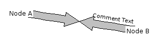 'edge' comment style
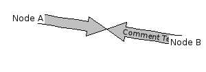 'center' comment style
Specify the position of the 'split' between the in and out arrows in a link. position is a percentage, and defaults to 50.
Specify the colours used for drawing the link.
red, green and blue are numbers from 0 to 255.
OUTLINECOLOR, BWOUTLINECOLOR and BWBOXCOLOR have an additional option - 'none' - which stops that element of the link being drawn.
COMMENTFONTCOLOR also has an extra option - 'contrast' - which will choose black or white, depending on the colour of the link. This is most useful with COMMENTSTYLE center.
The colours are used as follows:
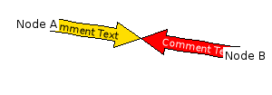 COMMENTFONTCOLOR contrast with COMMENTSTYLE center
Creates a hyperlink in the HTML output.
If you are using the HTML output facility, then a link is added to the <map> section of the HTML so that when you click on the (weathermap) link, you are taken to the url specified here.
It is also possible to specify the INFOURL for the 'in' and 'out' halves of a link individually, using ININFOURLand OUTINFOURL.
Same as INFOURL, but specifies a hyperlink for only the 'in' side of a link.
Same as INFOURL, but specifies a hyperlink for only the 'out' side of a link.
Creates a popup image in the HTML output.
If you are using the HTML output facility, and HTMLSTYLE is set to 'overlib', then a link is added to the <map> section of the HTML so that when you move the mouse pointer over the the (weathermap) link, a box will pop up containing the image that you specify. Typically used to link to historical data in your network monitoring system.
You can also specify more than one url, in which case the images are 'stacked' one after another in the popup box.
If a NOTES line is also specified for a link, then the image specified here appears with the NOTES text underneath it.
It is also possible to specify the OVERLIBGRAPH for the 'in' and 'out' halves of a link individually, using INOVERLIBGRAPH and OUTOVERLIBGRAPH.
You can influence how Weathermap positions the popup box, using the OVERLIBWIDTH and OVERLIBHEIGHT keywords.
OVERLIBGRAPH http://www.yoursite.net/mrtg/router1-link2-daily.png
Same as OVERLIBGRAPH, but specifies a pop-up graph for only the 'in' side of a link.
Same as OVERLIBGRAPH, but specifies a pop-up graph for only the 'out' side of a link.
Specify the width, in pixels of the graph image referred to by OVERLIBGRAPH line.
This is an optional extra that allows the OverLib library to make a better job of positioning the 'popup' image so that it doesn't appear off the edge of the screen. Typically, you would use this once, in the DEFAULT link. If you use this, you must also use OVERLIBHEIGHT, for either to have any effect.
Specify the width, in pixels of the graph image referred to by OVERLIBGRAPH line.
This is an optional extra that allows the OverLib library to make a better job of positioning the 'popup' image so that it doesn't appear off the edge of the screen. Typically, you would use this once, in the DEFAULT link. If you use this, you must also use OVERLIBWIDTH, for either to have any effect.
Specify the caption used for the popup HTML 'window' if you have also specified an OVERLIBGRAPH line. By default, this is the name of the LINK.
The text for the caption can contain special tokens to show map data.
Same as OVERLIBCAPTION, but specifies a pop-up graph caption for only the 'in' side of a link.
Same as OVERLIBCAPTION, but specifies a pop-up graph caption for only the 'out' side of a link.
Specifies the text or HTML notes for a link.
The notes text appears in a popup box when the user hovers their mouse over the link. If an OVERLIBGRAPH is specified too, then the text appears below the graph.
The map HTMLSTYLE must be set to 'overlib' to enable any of the mouse-hover functionality.
It is also possible to specify the NOTES for the 'in' and 'out' halves of a link individually, using INNOTES and OUTNOTES.
Same as NOTES, but specifies a text box for only the 'in' side of a link.
Same as NOTES, but specifies a pop-up text box for only the 'out' side of a link.
Specify an additional point that a link must pass through.
A link normally goes in a straight line between the two nodes listed in the NODES configuration line. If you need it to go around something else, or to seperate two parallel links so that the bandwidth labels are all visible, you can make the link curve.
If you specify multiple VIA lines, then the link will pass through each in turn, in the order they are specified.
You can choose between curved or angled links with VIASTYLE.
Any VIA can also be specified relative to a NODE on the map. This makes it easier to have curves keep the intended shape as you re-organise a map.
When using VIA to define a non-straight LINK, you can choose to have a curved link, where the curve passes through each VIA point, or an angled link where each VIA point is a 'corner'. The default is for a curved link.
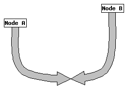Curved VIA
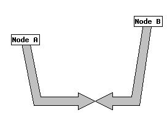Angled VIA
Specifies the whether the link should be drawn with one or two arrows.
A 'standard' (twoway) link has two arrows - one for inbound data and one for outbound data. In some situations (e.g. round-trip latency), you might only want an arrow in one direction.
One-way arrows only show the outbound BWLABEL, but they show it in the standard position - 25% of the way along. Change the position of the label with BWLABELPOS as usual (you still need to specify two positions in the BWLABELPOS line, however).
Specifies the style of arrowhead used for drawing links.
The default is 'classic' which has a wide arrowhead. You can also choose 'compact' which gives narrower heads.
Finally, you can get finer control by adjusting the size yourself. The width and length of the head are in units of link-width.
Classic is equivalent to '4 2' and Compact is equivalent to '1 1'.
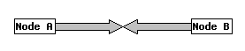 Classic arrow style
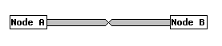 Compact arrow style
Specifies a value for a hint variable.
Hint Variables allow the user to pass settings to the internals of Weathermap that wouldn't normally need to be changed, or that aren't part of the core Weathermap application. Examples are: small rendering changes, parameters for datasources plugins and similar.
Hint Variables are either Global for the map, or assigned to a specific link or node.
There is more about Hint Variables in the Advanced Topics section.
Specifies the order in which to draw this item on the map.
By default, all nodes are drawn above all links. There are some situations where you might like to change this, for example if you use a NODE as a background image, and you want links to show in front of that image.
By default, all nodes have a Z coordinate of 600, and all links have 300. The map legend is at 1000, which cannot be changed (you can move everything else above it, if you like, of course). Items are drawn from lowest Z up to highest Z, so if you want a particular node to appear underneath the default links, you can use 'ZORDER 250' to do that.
Specify an PNG, JPEG or GIF image file to be used as a background image.
Any WIDTH and HEIGHT specifications will be ignored - the map will take the size of the background.
Specifies the width of the map image in pixels.
If a BACKGROUND is specified, and the imagefile is successfully loaded, then any WIDTH specified is ignored. If neither a BACKGROUND or WIDTH is specified, then the default WIDTH is 800 pixels.
Specifies the height of the map image in pixels.
If a BACKGROUND is specified, and the imagefile is successfully loaded, then any HEIGHT specified is ignored. If neither a BACKGROUND or HEIGHT is specified, then the default HEIGHT is 600 pixels.
This specifies the name of the HTML file that will be generated.
The equivalent command-line option takes precedence over this configuration line, if both are used. If you are generating maps using the Cacti plugin, then this directive is ignored.
Specifies a CSS stylesheet to reference, when generating HTML.
When HTML output is enabled, this allows you to include your own CSS stylesheet in the result, allowing for customisation of the output without needing to use awk/perl/etc to modify the HTML.
If you are generating maps using the Cacti plugin, then this directive is ignored.
This specifies the name of the PNG, JPEG or GIF file that will be generated. The format chosen is based on the file-extension.
The equivalent command-line option takes precedence over this configuration line, if both are used.
If you are generating maps using the Cacti plugin, then this directive is ignored. You can set the output format in the Cacti Settings page.
If you are generating output files using HTMLOUTPUTFILE and IMAGEOUTPUTFILE that are in a different directory to the weathermap installation, then the HTML will probably contain an incorrect IMG tag. This keyword allows you to replace the IMG SRC attribute in the HTML output with a corrected one.
The equivalent command-line option (--image-uri) takes precedence over this configuration line, if both are used.
If you are generating maps using the Cacti plugin, then this directive is ignored, as the filename and uri are calculated instead.
Defines a custom font to be used for text within the map.
By default, the GD library used by Weathermap has 5 fonts, numbered 1-5. FONTDEFINE allows you to define new font numbers, and link them to fonts in two other formats.
The first format is 'GD fonts', which are a bitmapped format used by GD alone. They are not scalable, and are also platform-specific (they use a different byte-order depending on the host). You should specify the full filename including any extensions.
The second format is TrueType fonts, which are scalable, standard and generally a lot nicer! This time, you need to specify the size that the font should be rendered at. The size is in pixels. You can load the same font into multiple fontnumbers with different sizes to use in different parts of a map.
The freetype library used in PHP makes a somewhat complex set of rules for where it will search for truetype fonts. The two easiest options are:
Regardless of the format, the newly defined font can be used anywhere that you'd normally use a font number (for example, BWFONT or KEYFONT).
FONTDEFINE 10 VeraBd 16
Specify the fonts used for various text.
Fonts are specified by number. The GD library that Weathermap uses has 5 built-in fonts, 1-5. You can define new fonts based on TrueType or GD fonts by using the FONTDEFINE directive.
The built-in GD fonts.
Specify the colours used for drawing the global elements of the map.
red, green and blue are numbers from 0 to 255.
Specifies where to draw the timestamp on the map.
If no TIMEPOS line is given, then the timestamp is drawn in the top-right corner. To hide it completely, set y to be
You can optionally specify an additional parameter to change the text of the timestamp. This text can
contain special tokens which are substituted with parts of the current time. The default timestamp
text is
You can control the font used to draw the timestamp with TIMEFONT, and the colour that it is drawn in, using TIMECOLOR.
Specifies where to draw the 'oldest data' timestamp on the map.
The data collection part of weathermap collects a timestamp for each piece of data, alongside the actual data. This is intended to signify the time that the data was actually valid - it would be the file modification date if it was a text file, or the current time if it was a live SNMP query. The minimum and maximum of these times are collated, and can be shown on the map with MINTIMEPOS and MAXTIMEPOS.
If no MINTIMEPOS line is given, then the timestamp is not drawn.
You can optionally specify an additional parameter to change the text of the timestamp. This text can
contain special tokens which are substituted with parts of the current time. The default timestamp
text is
You can control the font used to draw the timestamp with TIMEFONT, and the colour that it is drawn in, using TIMECOLOR.
Specifies where to draw the 'newest data' timestamp on the map.
The data collection part of weathermap collects a timestamp for each piece of data, alongside the actual data. This is intended to signify the time that the data was actually valid - it would be the file modification date if it was a text file, or the current time if it was a live SNMP query. The minimum and maximum of these times are collated, and can be shown on the map with MINTIMEPOS and MAXTIMEPOS.
If no MAXTIMEPOS line is given, then the timestamp is not drawn.
You can optionally specify an additional parameter to change the text of the timestamp. This text can
contain special tokens which are substituted with parts of the current time. The default timestamp
text is
You can control the font used to draw the timestamp with TIMEFONT, and the colour that it is drawn in, using TIMECOLOR.
Specifies the position of the title text.
If no TITLEPOS line is given, then no title is drawn. You can optionally specify an additional parameter, to change the title. Any text after the second coordinate is taken as a new TITLE.
You can control the font used to draw the title with TITLEFONT, and the colour that it is drawn in, using TITLECOLOR.
Specifies base value for kilo, mega and giga abbreviations.
Both BANDWIDTH and BWLABEL can use K,M,G,T as abbreviations for thousands, millions and so on. You can define what the multiple used is. The default is 1000.
Specifies the HTML output style.
When HTML output is enabled, there are two variations, which you can choose between. 'static' is a basic HTML page with client-side imagemap, but no 'pop up' graphs. 'overlib' adds the use of the OverLib library to the page, so that pop up graphs can work, too. This requires Javascript, which is why 'static' is the default.
Defines one 'span' within the link colour-coding table.
SCALE is used to specify how NODEs and LINKs are colour-coded according to their percent usage. If the percentage usage falls between min and max then the colour specified by red, green and blue is used to colour the link. Colour values are between 0 and 255. Percentages are between 0 and 100, obviously.
In combination with the 'absolute' option of USESCALE, you can also use raw data from TARGET lines. Just use the absolute values for min and max in SCALE lines. In this format, min and max can use the same abbreviations for mega, giga etc as BANDWIDTH and MAXVALUE can.
If you specify two colours on the line (the third and fourth forms above), then the colour chosen for the link will be calculated as a proportion between the two colours. You can avoid specifying many SCALE lines this way.
If you specify the word 'none' instead of a colour, then a transparent colour is used for that range of values.
Without a scalename, the SCALE line will add a definition to the scale named 'DEFAULT'. If you define any other named scales, you can then use the USESCALE directive to specify that a particular NODE or LINK use your new scale.
With any of the formats, you can specify a 'tag' on the end of the line. When the colour is decided for the 'in' and 'out' parts of a NODE or LINK, then a special SET variable is defined called {node:this:inscaletag} (or outscaletag, or link:this...) which contains the tagtext from the SCALE line that matched. You can use this to do things like choose an icon, or change the label of a node or link based on a percentage. There are examples of this (and most other node-related formatting things) in the suite-1.conf map found in the random-bits/ folder of the weathermap distribution.
If you don't add any SCALE lines to a configuration file, then a default set is added for you, but as soon as you add one, you'll need to make enough to cover the whole 0-100 range to get nice colours. Any percentage not matched by SCALE rules is rendered in grey.
You can specify a colour for an exact percentage (e.g. zero) by using that value for both the min and max values. The scale lines are sorted by min then max, and scanned from top to bottom. The first match wins.
To show a legend in the map for a given SCALE, you should use KEYPOS and KEYSTYLE.
You can also apply SCALEs to colorise ICON images. You do this using USEICONSCALE.
SCALE 0 100 0 255 0 255 0 0
SCALE 1 10 140 0 255 SCALE 10 25 32 32 255 SCALE 25 40 0 192 255 SCALE 40 55 0 240 0 SCALE 55 70 240 240 0 SCALE 70 85 255 192 0 SCALE 85 100 255 0 0
Specifies the position of the key, or legend, that shows what each colour-range in a scale means. If a scalename is not given, then "DEFAULT" is assumed. If no KEYPOS line is given for a scale, then no legend is drawn - handy if you have many many colour ranges. You can also hide any legend by giving it a position with negative coordinates.
You can optionally specify an additional parameter, to change the heading above the colours in the key. This can be used to change the language of the map, for example. If a scalename is given, then you must also specify a title - there is no useful default title for non-DEFAULT scales.
You can control the font used to draw the key with KEYFONT, and the colours that it is drawn in, using KEYTEXTCOLOR, KEYBGCOLOR and KEYOUTLINECOLOR.
Specifies the style of the key, or legend, that shows what each colour-range means. If a scalename is not given, then "DEFAULT" is assumed. Valid stylenames are: 'classic', 'horizontal', 'vertical', 'inverted' and 'tags'.
Classic has a line for each SCALE range defined. 'vertical' and 'horizontal' are fixed-size, showing a continuous block from 0-100% usage, which is much more useful when gradient SCALEs are used, or when you have a large number of SCALE lines in one scale. 'inverted' is the same as 'vertical', but with the zero point at the bottom, thermometer-style. Finally, 'tags' is the same style as 'classic', but instead of percentages, it shows the tag string from the end of the SCALE lines, if there are any.
For 'horizontal' and 'vertical' styles, you can optionally add an additional parameter, which specifies the longer dimension of the legend in pixels. That is, for a horizontal legend, it specifies the width. The other dimension is calculated from the size of the font used (see KEYFONT).
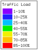Classic Style
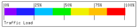Horizontal Style
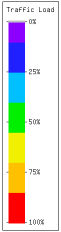Vertical Style
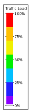Inverted Style
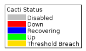Tags Style
You can hide the percentage signs in the key, by setting key_hidepercent_scalename to 1
If you have a 0->0 line in your SCALE, then you can hide that in the key, by setting key_hidezero_scalename to 1
SET key_hidezero_DEFAULT 1 SET key_hidepercent_DEFAULT 1
Specifies a value for a hint variable.
Hint Variables allow the user to pass settings to the internals of Weathermap that wouldn't normally need to be changed, or that aren't part of the core Weathermap application. Examples are: small rendering changes, parameters for datasources plugins and similar.
Hint Variables are either Global for the map, or assigned to a specific link or node.
There is more about Hint Variables in the Advanced Topics section.
SET link_bulge 1
SET screenshot_mode 1
Include the contents of an additional file within the current map configuration file.
Allows you to use a common set of definition across several map files. There are several restrictions: